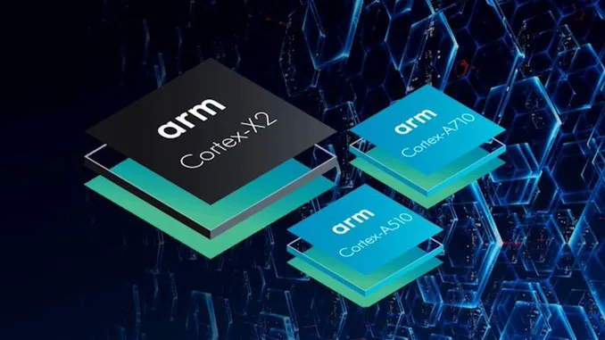

Elon Musk fişinin çekti! Kanye West'in Twitter hesabı askıya alındı

İngiliz Arm, Qualcomm ile yaşadığı hukuki anlaşmazlık nedeniyle iş
stratejisini değiştirme kararı aldı. Akıllı telefon ve tablet gibi
son cihaz üreticileri artık lisans ücreti ödemek zorunda.
Buna ek
olarak ARM, üçüncü taraf GPU’ların, NPU’ların ve ISP’lerin, bu
bileşenler zaten mevcutsa ARM işlemcileri içeren çiplerde
kullanılmasını yasaklayacak.
ARM, sunucu işlemcileri üreticisi
Nuvia’yı satın aldıktan sonra Qualcomm’a dava açmıştı. İngiliz
şirket, Nuvia’nın ARM lisansını kullanarak yarı iletken tasarımlar
yarattığını ve bunların izinsiz olarak Qualcomm’a
devredilemeyeceğini, bu satış sonrasında önceki tüm anlaşmaların
geçersiz sayılması gerektiğini düşünüyor.
Ayrıca ARM, Qualcomm
gibi çip üreticileri için standartlarını sıkılaştırma kararı aldı.
ARM, eşdeğerlerini lisanslı bir ürün olarak satıyorsa, ARM
CPU’ları kullanan tek çipli cihazlarda üçüncü taraf bileşenler
kullanılamaz. Görüntü işlemcilerinin yanı sıra grafik ve ağ
işlemcileri de bundan etkilenecek.
Samsung ve AMD ile MediaTek ve
Imagination arasındaki ittifaklar bu atılımdan etkilenecek. Ancak
yeni düzenlemeler herkes için geçerli olmayacak.
Apple, ARM
gelişiminin ön saflarında yer aldı ve Nvidia, ARM mimarisini
kullanarak bileşenler oluşturmak için 20 yıllık bir lisansa sahip.
Ayrıca, gelişmelerin ARM’ın Broadcom ile olan ortaklığı üzerinde
bir etkisi olmayacak.
Mayıs ayında Qualcomm, ARM’ye yatırım yapma
ve İngiliz yonga üreticisinin bağımsızlığını koruyacak bir grubun
oluşumunu destekleme niyetini resmen açıkladı.
Halka arzdan sonra,
ARM’nin sahibi olan SoftBank, üretimdeki kontrol hissesini elinde
tutmayı planlıyor. Halka arz 31 Mart 2023’te sona erecek mali yıl
içinde gerçekleşecek. Kaynak: techlog360